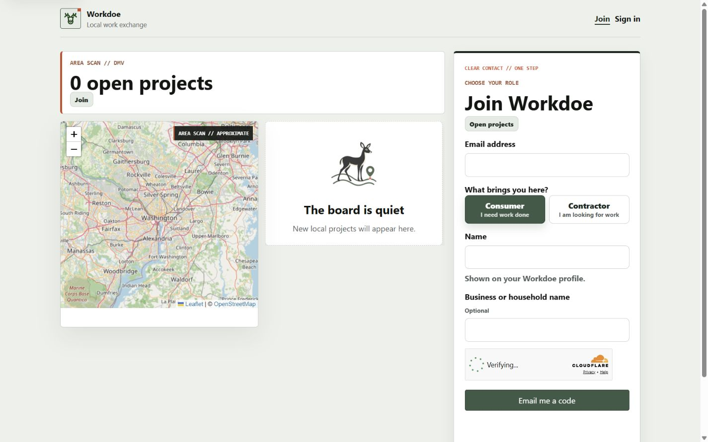
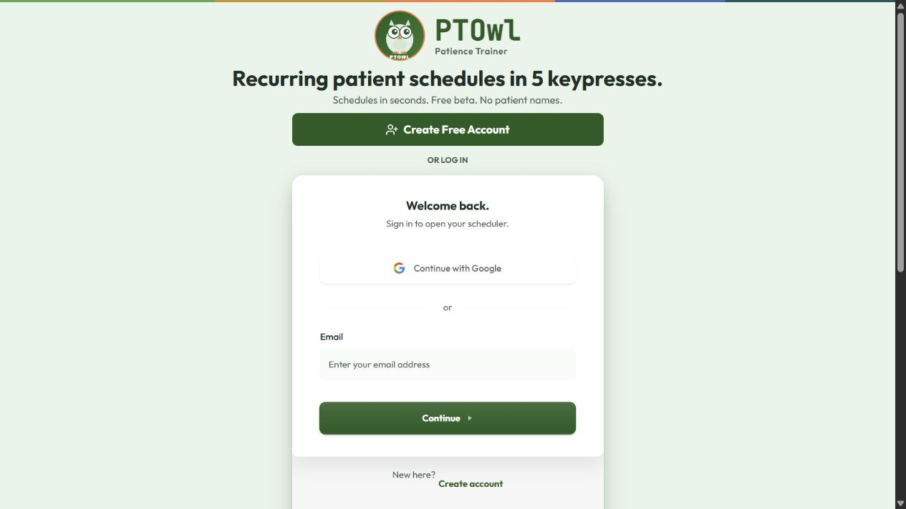
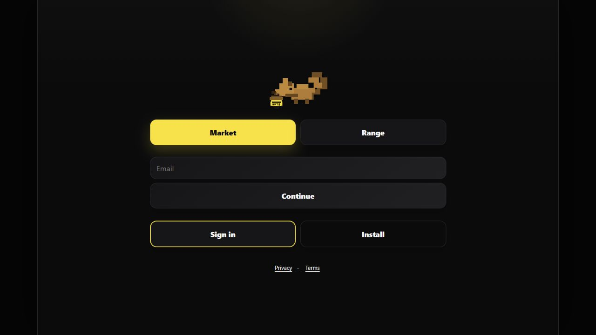
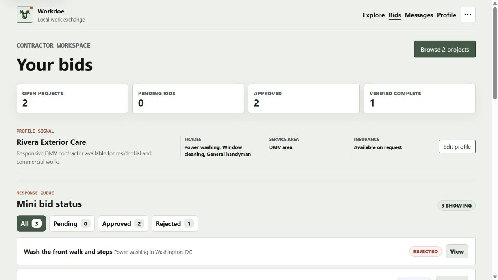
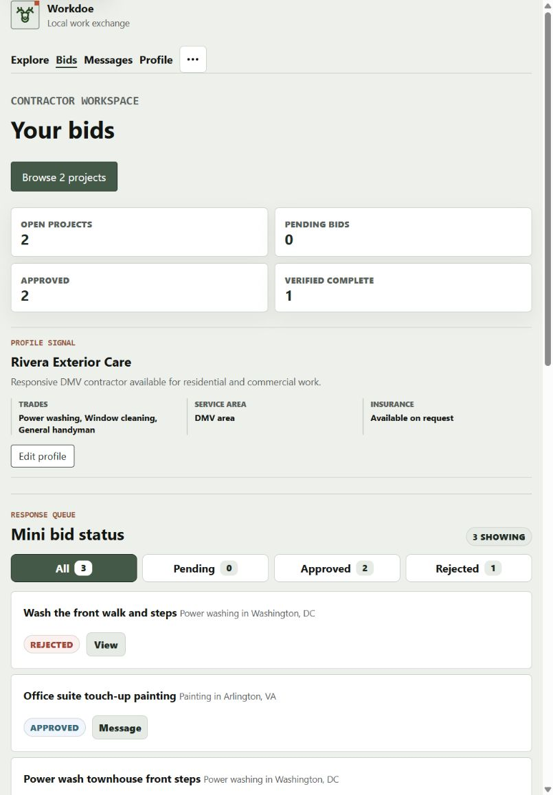
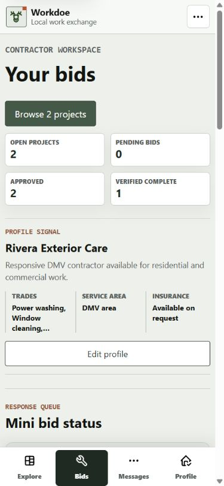

Earlier Workdoe
Keep the real project map and direct entry. Reduce explanatory copy and make each role’s next task obvious.
Workdoe stabilization
Adapt product discipline and release governance from prior work. Do not copy PTOwl or NuTs source, branding, or protected product expression.
Captured evidence
Real screenshots from the 2026-08-15 audit

Keep the real project map and direct entry. Reduce explanatory copy and make each role’s next task obvious.

Adapt compact workflow framing, strong form hierarchy, and visible operational status. No source code or branded expression is copied.

Adapt evidence-led QA, quiet density, and release documentation. NuTs remains proprietary reference material only.
Design contract
Explore, Post, Messages, Profile. Keep account utilities in overflow.
Keep approximate project locations visible and synchronize map, list, and selected project.
Preserve six service families, deterministic service keys, and six-step project briefs.
Show policy advisories, bid state, verified completion, and location privacy without technical marketing copy.
Accepted implementation targets
Captured from the signed-in local Flask runtime

One-line task navigation, compact identity band, status tabs, and scannable bid rows.

Header tasks remain visible while queue metrics and project rows reflow without horizontal overflow.

Icon-led bottom navigation, sticky app bar, and the bid queue entering the first viewport.
Release acceptance
Login and project composition use native dialogs with canonical full-page fallbacks and focus restoration.
Public list, map, and API states expose city-level or rounded coordinates only.
Consumer and contractor accounts retain separate project and fulfillment capabilities.